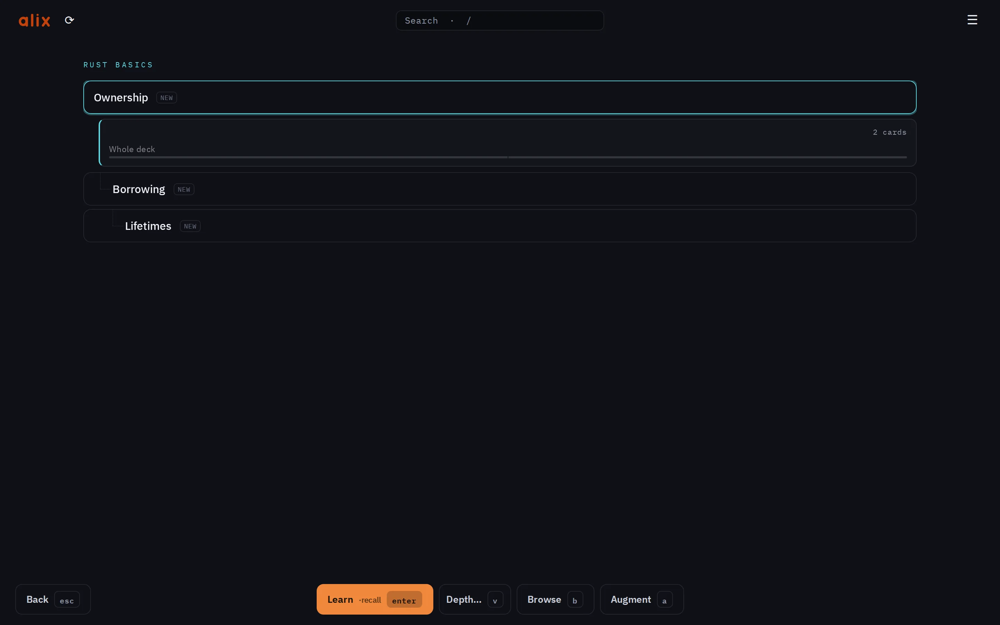
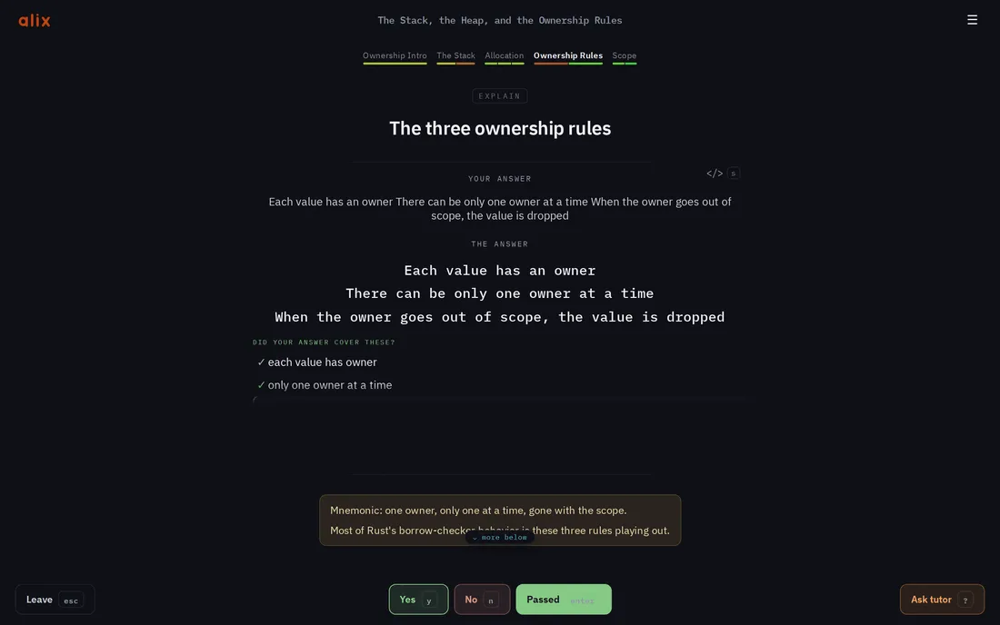
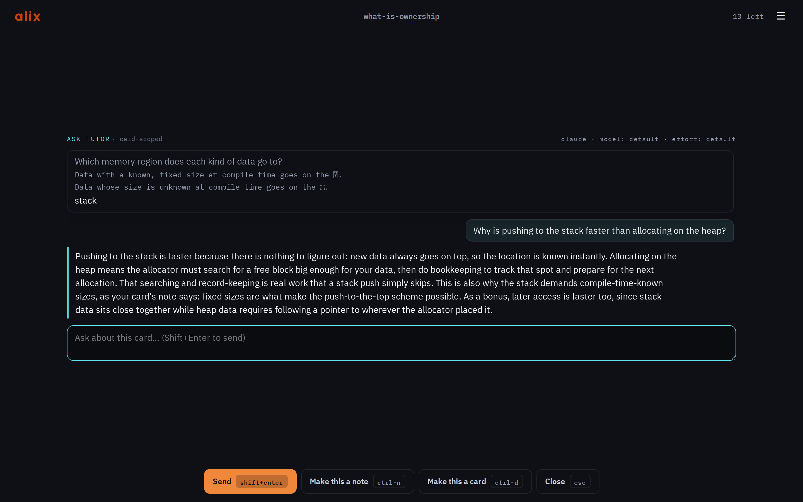
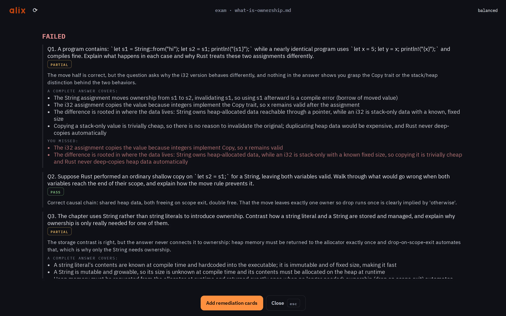

A short talk about how learning works —
and a small open-source tool built around it.
I · how learning works
Read a chapter twice and it feels familiar. But familiarity is recognition — the ability to nod along. Understanding shows up as recall: producing the idea yourself, with the book closed.
Psychologists call the gap the illusion of fluency: rereading and highlighting rate high on effort and low on effect.
I · how learning works
Trying to pull something out of memory strengthens it more than putting it in again. Let’s do one:
What is the capital of Australia?
Canberra — not Sydney, not Melbourne.
That small struggle you just felt? That is the rehearsal that makes memory stick — the testing effect.
I · how learning works
Memory decays on a curve. Each successful recall, made just before you’d forget, flattens it — so the reviews get rarer while the memory gets stronger.
That schedule is mechanical — exactly what software is for. Spaced-repetition systems have run it since the 1970s.
I · how learning works
A large randomized trial gave ~1,000 students GPT-4 for math practice. While the AI was there, practice went great. Then came an exam without it:
— worse than students who never had AI at all. A guardrailed tutor that wouldn’t just hand over solutions eliminated the harm. But it added no gain.
Bastani et al., “Generative AI Can Harm Learning”, PNAS 2025. Randomized controlled trial, ~1,000 high-school students.
II · alix
Spaced repetition at the core, an AI layer woven through — a tutor on any card, generated decks, and an exam that gates progress on verified understanding. In your browser — an adult view, or a simpler one for kids. Local-first. Open source.

II · alix
## What does the CAP theorem state? <!-- reveal: line --> A distributed store can guarantee only two of: Consistency, Availability, Partition tolerance. > The trade-off only bites while a partition is happening.
A deck is a file. Write it in any editor, version it with git, grep it, keep it for decades. No account, no database, no lock-in — and one comment-style directive can change how a card quizzes you.
II · alix

II · alix
One keypress opens a tutor on the card you’re looking at — grounded in the card, its deck, and (if you allow it) the deck’s actual source. Good explanations can be saved back onto the card as a note.

II · alix
A deck can name its source — a chapter, a paper, real code. Once the cards are drilled, the AI writes fresh open questions from that source and grades your written answers against it — never against your cards. Pass, and the topics that build on this one unlock.

II · alix
Cards hold the nodes of what you know. A trace walks a real path through a source — every step you predict what happens next, then the actual lines are revealed, and you judge your gap.
II · alix
III · honestly
Every refusal buys the one thing it is:
verified understanding,
on a schedule,
in files you own.
III · honestly
III · honestly
Each neighbor does its own job well. The combination is the empty spot alix aims at — whether it fills it well is for you to judge.
III · honestly
| alix generate <lecture-url> | turn something you must learn into a deck |
| alix | review it — the deck picker opens in your browser |
| alix → Exam | when it’s drilled: prove you understood it — one click in the picker |
Binaries for Linux, macOS, Windows — or cargo install alix. MIT/Apache-2.0, source on GitHub.
alix.study · github.com/Alex6323/alix · the book: alix.study/book
Slides: alix.study/slides.html — MIT/Apache-2.0, adapt freely. Appendix follows for the curious.
A · appendix — the deck format on one slide
| ## front | starts a card; the plain lines below are the answer |
| \blank{span} | cloze — each blanked span in the answer becomes its own sub-card |
| - [x] / - [ ] | a task-list answer is an authored multiple-choice card |
| > note | shown after answering |
| <!-- reveal: line --> | flip · line — how a card presents; how deeply you drill is a per-session choice |
| direction: both | review a card in both directions (frontmatter or per card) |
| requires: <deck> | frontmatter prerequisite — builds the unlock tree |
| source: <url|path> | frontmatter: the exam’s ground truth (and the tutor’s reference) |
| <!-- at: file:lines --> | a citation — the card can reveal its source lines |
The full reference lives in the book.
A · appendix — the exam, precisely
A · appendix — one checkpoint of a real trace
--- trace: how pressing the Good key becomes a saved grade source: .. --- ## You press Good. What does the page send the server — and what not? grade(g) POSTs /api/grade with { grade: g } and the session revision echoed in a header — no card id; the server owns the seat. <!-- at: web/alix/review/study.js:100 --> > The page is a thin view; the server owns the session.
You answer the question before the cited lines are revealed — then judge your own gap. The next checkpoint picks up exactly where this one left off.
A · appendix — references
A · appendix — likely questions
| Does my data leave my machine? | No — decks and progress are local files. Only the AI calls you make go out, through your own CLI account. |
| Which AI do I need? | Any one of: Claude Code (default), Gemini CLI, Codex CLI, Copilot CLI — signed in. Codex can’t fetch URLs; use local sources there. |
| Does it work offline? | The whole flashcard core, yes. AI features need the network. |
| What does it cost? | alix is free and open source. The AI backend uses a subscription you likely already have. |
| Can I import from Anki? | Cards, yes (TSV export) — scheduling history, no. |
speaker notes
contents — click to jump, o or Esc to close